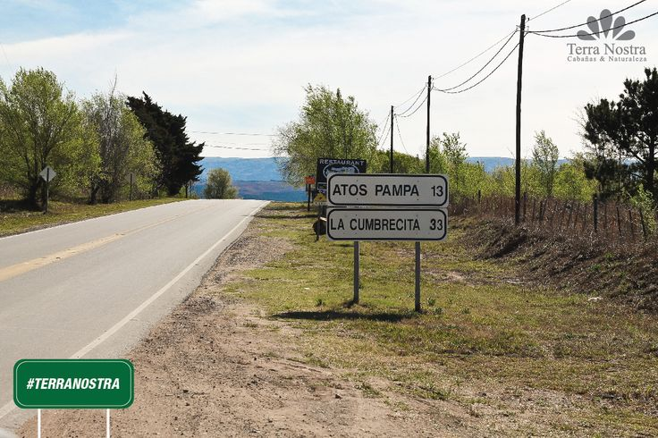

Verano en las sierras
Bienvenidos
;
Principal
Contacto
Conexion Api (Debe iniciar sesión)
<> <>
Placeres
Vistas
Rios.Tranquilidad. Hermosos Paisajes.

La naturaleza toda
Paz
Para olvidarse un momento de todo
_2008-09-20.jpg)